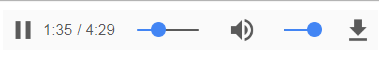

Media player
Nếu chúng ta chỉ sử dụng các thẻ audio hoặc video thì các trình duyệt hiển thị khác nhau.
Chrome:

Firefox:
Tôi tạo một thư viện để hỗ trợ hiển thị nhất quán trên các trình duyệt, ngoài ra còn có các hiệu ứng như phụ đề và karaoke.
Simple audio
Karaoke audio
Video
Tham khảo
- codepen.io H5Aplayer HTML5 Music LRC
- codepen.io tuannvbg on CodePen
- codepen.io HTML5 Music Player LRC 2018
- codepen.io HTML5 SMusic Player LRC 2019
- s-mohan.github.io Smuisc - 水墨寒的博客
- wayou.github.io 精選 | a collection of songs that I love, also shows how to sync lyric with HTML5 audio tag